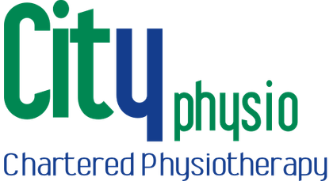
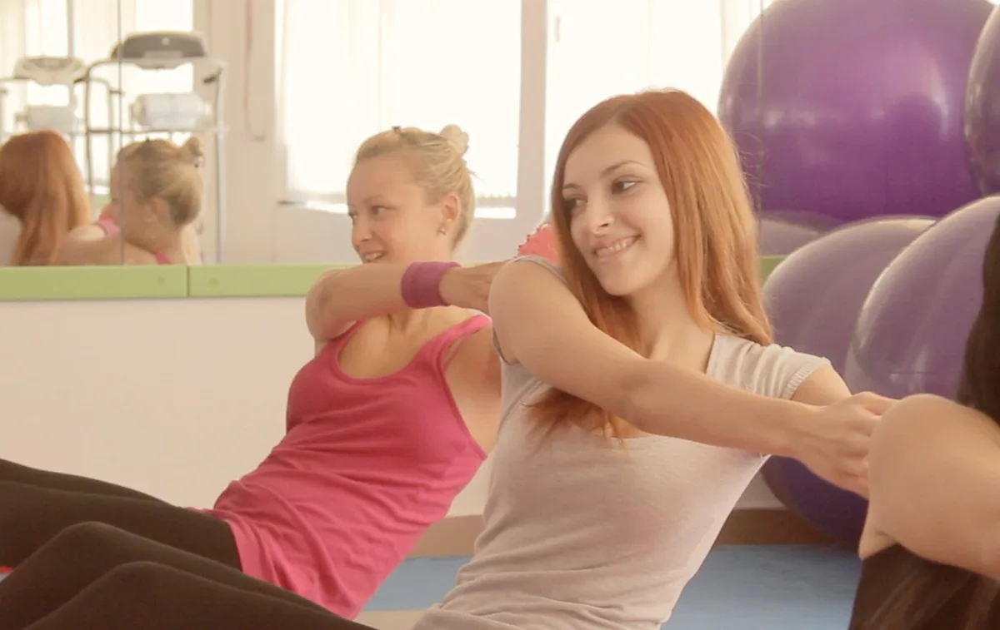

Assessment
Understand what’s going on.
A detailed assessment, followed by a clear explanation of the findings.

Chartered physiotherapy · Lucan, Co. Dublin
Understand your pain.
Build your way forward.
Hands-on physiotherapy and exercise rehabilitation, with a team who put understanding your problem first.
01 / Care that fits you
From everyday aches to returning to sport.
Explore the clinic’s services.
02 / The CityPhysio approach
Understand what’s going on.
A detailed assessment, followed by a clear explanation of the findings.
Care shaped around you.
Hands-on care with exercises to support your treatment.
Work towards independence.
An exercise programme to support movement and self-management.
03 / Explore by concern
You don’t need to know the name
of a treatment to start a conversation.
Explore your options
Explore hands-on physiotherapy and exercise rehabilitation for back or neck concerns.
Explore this serviceA guide to our services. Your physiotherapist will assess your individual needs.

04 / Physiotherapist-led Pilates
Explore classes, find current times and talk to the clinic about getting started.
Explore Pilates05 / Meet your clinic
Clinical specialists Margaret Hanlon and John Shenton lead the clinic in Lucan village. Self-referrals and referrals from GPs and consultants are welcome.
Meet the teamThe clinic lists Vhi, Laya, Irish Life, ESB and Garda Medical among its insurance partners. Check your policy for cover.
Your next step
Book an appointment, or speak to the team
if you’re unsure where to begin.